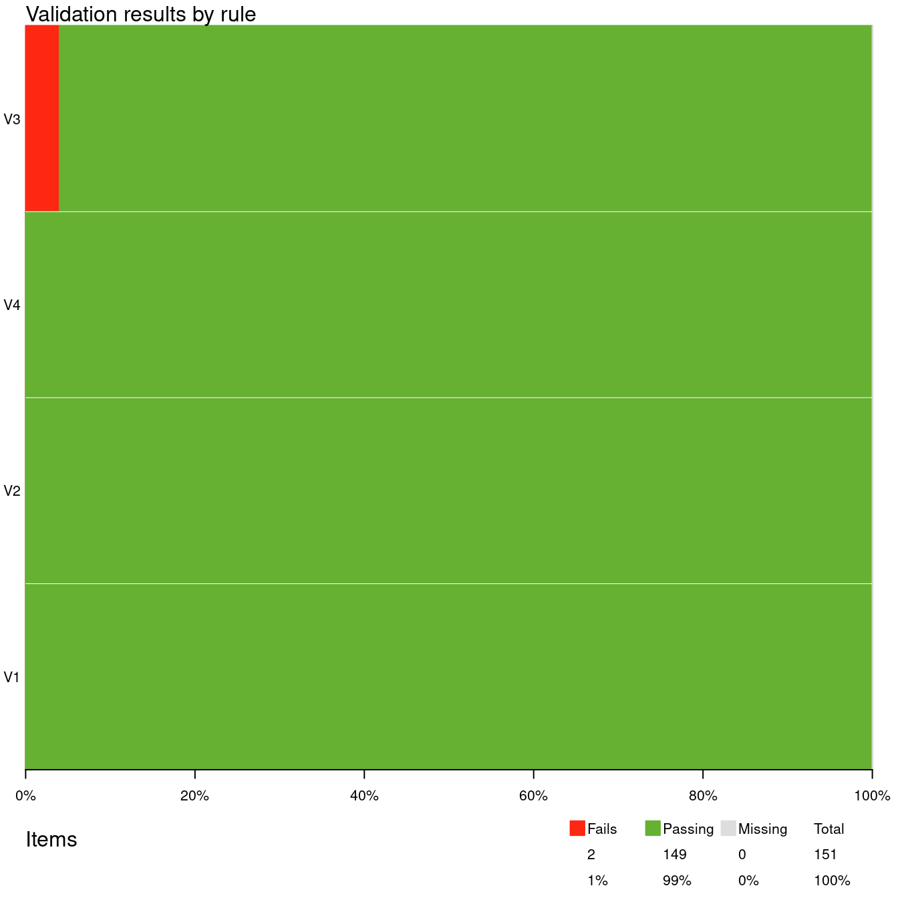

Chapter 1 Introduction to validate
Data Validation is an activity verifying whether or not a combination of values is a member of a set of acceptable combinations (Di Zio et al , 2015).
The validate package is intended to make checking your data easy, maintainable, and reproducible. It does this by allowing you to
- test data against a reusable set of data validation rules:
- investigate, summarise, and visualise data validation results;
- import and export rule sets from and to various formats;
- filter, select and otherwise manipulate data validation rules’;
- investigate, summarise, and visualise rule sets.
For advanced rule manipulation there is the validatetools package.
1.1 A quick example
Here’s an example demonstrating the typical workflow. We’ll use the built-in
cars data set, which contains 50 cases of speed and stopping distances of
cars.
## speed dist
## 1 4 2
## 2 4 10
## 3 7 4Validating data is all about checking whether a data set meets presumptions or
expectations you have about it, and the validate package makes it easy for you
to define those expectations. Let’s do a quick check on variables in the
cars data set. We first load the package, and create a list
of data quality demands with the validator() function.
library(validate)
rules <- validator(speed >= 0
, dist >= 0
, speed/dist <= 1.5
, cor(speed, dist)>=0.2)Here, the first three rules are record-wise checks: each record will yield one
answer. In the last rule we check whether speed and distance are positively
correlated this will yield a single TRUE or FALSE for the whole data set.
We now confront the data with those rules and save the output into a variable
called out.
The easiest way to check the results is with summary().
## name items passes fails nNA error warning expression
## 1 V1 50 50 0 0 FALSE FALSE speed - 0 >= -1e-08
## 2 V2 50 50 0 0 FALSE FALSE dist - 0 >= -1e-08
## 3 V3 50 48 2 0 FALSE FALSE speed/dist <= 1.5
## 4 V4 1 1 0 0 FALSE FALSE cor(speed, dist) >= 0.2This returns a data frame with one line of information for each rule V1,
V2, V3 and V4. To be precise:
- How many data items were checked against each rule.
- How many items passed, failed or resulted in
NA. - Whether the check resulted in an error (could not be performed) or gave an warning.
- The expression that was actually evaluated to perform the check.
The same information can be summarized graphically as follows .

In this plot each horizontal bar indicates the percentage of Failing, Passing, and Missing cases. The table in the legend lists the total number of Fails, Passes and Missings, summed over all checks. Here, we have 4 rules. The first three rules yield 50 results each, while the last rule yields a single result. Hence there are 151 validation results in total.
Using the function violating we can select the records that violate one or
more rules. We select only the first three results because the last rule can
not be interpreted record by record.
## speed dist
## 1 4 2
## 3 7 4We can extract all individual resuls results using for example as.data.frame.
## name value expression
## 1 V1 TRUE speed - 0 >= -1e-08
## 2 V1 TRUE speed - 0 >= -1e-08
## 3 V1 TRUE speed - 0 >= -1e-08We see that in record 1, rule V1, was satisfied (the result is TRUE), and
that validate left a bit of slack when executing the rule, to avoid false
negatives caused machine rounding issues.
Summarizing, the basic workflow in validate is to create a rule set, confront
a data set with the rules in the rule set, and than analyze or use the results
further. To understand which checks you can perform with validate you only
need to remember the following.
Any R expression that results in a
logicalis accepted byvalidateas a validation rule.
You are now ready to start validating your data, and navigate Chapters
3-5 to learn how to
define specific types of checks. Chapter~7, discusses more
details about working with validate.